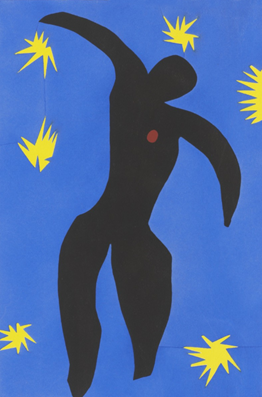
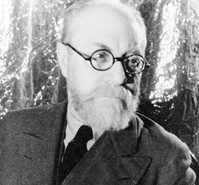
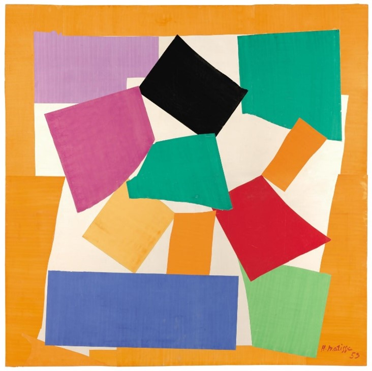
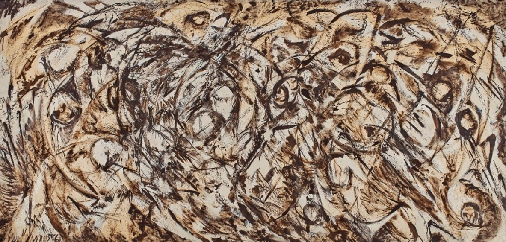
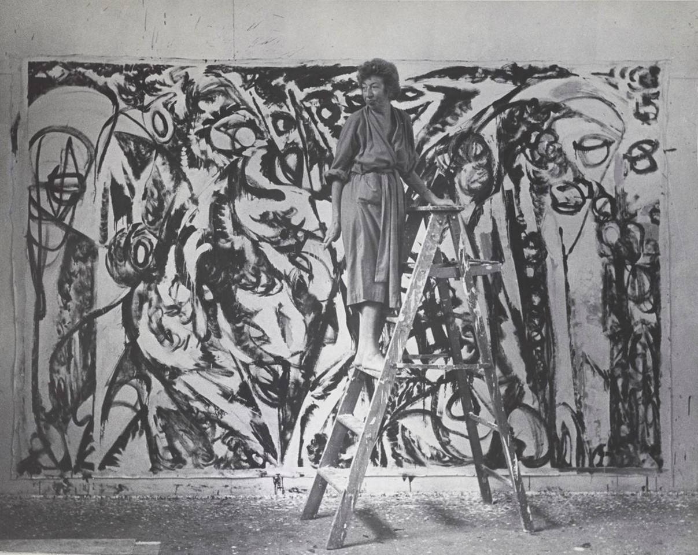
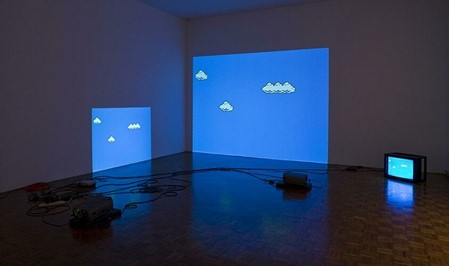

Chapter 6. Pushing the Limits Using Constraints
This thesis has mapped the journey of The Exceptions from 1987 to 1989 in order to discuss how technical limitations motivated the creation of demo art. The Exceptions became better programmers, graphics artists, and musicians by overcoming technical limitations. In this section the final step is taken, namely discussing the thesis' conclusion: limitations in art do not hinder its creation but rather stimulate ingenuity and inventiveness to push the limits.
6.1 Breaking Limitations as the First Motivating Factor
Computer demos are a means of artistic expression as real-time computer animations with music. The youth subculture called the "demoscene" emerged from the illegal cracker scene in the 1980s, where demo-makers showcase their abilities in exceeding the technical capabilities of home computers. Members of the demoscene were greatly geographically distributed in these days before the web and were also fragmented by computer systems; many were developing for different computers.
Each computer system in the 1980s and 1990s had its own limitations in memory, graphics, and sound capabilities. The creators of demos sought to prove that the system they chose to create for was more capable than the manufacturer's specifications. They often compared their achievements with other demo creators, particularly those on more capable machines. In many cases, they shared their programming techniques freely in the demoscene.
The Exceptions were the first group to create demos on the Atari ST to prove that their machine of choice could meet the capabilities of the competing Commodore Amiga. Through their demo art, The Exceptions inspired others to create their own demos.
As discussed in detail in the previous sections, The Exceptions formed in 1987 in the cracker scene and created intro screens for pirated games. They released their first demo, README.PRG, that broke the Atari ST's color limitation, producing artwork in more than 16 colors. They created smooth horizontal scrolling by with a horizontal scrolling text, something the Atari ST was thought not to be capable of. They established their rivalry with the Commodore Amiga, the technically superior machine.
They taught themselves the necessary skills to produce their demo art. Erik Simon (ES) pixel painted, Udo Fischer (-ME-) programmed in Motorola 68000 assembly code, and Jochen Hippel (Mad Max) wrote music for the limited sound chip of the Atari ST. They approached the creation of their demo art from the craftsman's position and the technician's perspective, thus creating "digital folk art".
In their next two demos, they produced music that was comparable to the superior SID chip in the Commodore 64 using ST's limited sound hardware: the Little Sound Demo and the Little Color Demo. With their demos, they reached out to a community of crackers and demo-makers, inspiring their peers to produce their own works. The same year, The Exceptions collaborated with fellow demo-coder Alyssa to remove the lower border of the ST's screen for the Super-Neo Demo Show. They were influenced by fantasy and science fiction films and heavily borrowed the aesthetic from computer games for their demos' graphics and effects. In their scrolling texts they used self-aggrandizing language, taking jabs at their peers, but were self-deprecating about their own work.
In 1988, The Exceptions peaked as demo-makers and produced the most demos to break the numerous hardware limitations, including the ST's color limits, the bottom and the right screen borders, and the limits of the ST's sound chip. In their B.I.G-Demo, they produced the longest scrolling text to date on any system.
In this same year, The Exceptions were recognized outside of the demoscene when they published a series of programming articles in ST-Magazin 68000er. This was also the year that The Exceptions decided to use their acquired skills to become game developers and no longer create demos. The Exceptions inspired others in the Atari ST demoscene and passed the torch on to other demo-makers.
Before leaving the demoscene in 1989, The Exceptions collaborated with other demo-groups to create the Union Demo that broke the last hardware limitations of the Atari ST. Using their inquisitiveness and ingenuity, they "tickled out" the last pieces of performance from the Atari ST, broke its last limits, and helped create a thriving demoscene on that system. They led the way and demonstrated what could be done, thus uniting demo-groups globally to produce collaborative demo art projects in a pre-web age.
6.2 Reading the Absence
What is striking about these demos is not only what they depict, but also what they do not depict. Topics often examined in art, such as explicit political statements and messages, depictions of sexual content or nudity, are completely absent in these demos. This is due to the very nature of the demos; their main message was one of technical exhibitionism. The demo-makers explicitly deliver astounding technical achievements and brag about them.
Whether specifically intended or not, demo-makers have a socio-economic, even political, message by freely distributing their demo art and sharing their programming knowledge, thus representing early manifestations of the open-source movement. The music and some of the graphics do not respect the laws of copyright, even openly bragging at having replicated the commercially produced music on other computer systems. The images, particularly in the Super-Neo-Demo-Show, were inspired by commercial and copyrighted materials, meticulously replicated by hand in pixels. They copied the movie poster of The Last Unicorn, a painting of the dragon Smaug from Tolkien's The Hobbit, and paintings by the Hildebrandt brothers, commercial painters in their own right (see 3.5 Super-Neo-Demo-Show). Hence, the demos take inspiration from consumer culture and propagate the free distribution of ideas without commercial interest.
They are not alone in this; rather, without deliberately intending it, The Exceptions follow in the tradition of the artist Barbara Kruger. Like other pop-artists, Kruger appropriated consumerist imagery for her postmodern conceptual art to explore and analyze identity, sexuality, and the portrayal of women in the mass media, and how they are distorted and objectified.[68]
As former members of the cracker scene, The Exceptions used copyrighted images from popular culture not as a means of criticism, but rather out of a disregard for the copyright laws, and a personal affection for the chosen subject matter even though their use was illegitimate. In the late 1980s, this remained unnoticed by the copyright holders due to the restricted distribution of the demos. In today's context, their use of copyrighted materials would likely qualify as "fair use".[69]
Though the term "open-source" had not yet found wide adoption at the time, The Exceptions technical solutions were open-source in the truest sense of the word: they invented their own routines and algorithms for their demos and shared the source code with the public (see 4.3 Mainstream Exposure). The work is not influenced or tamed by any sponsors or patrons that might have financed it; thus, the work is a pure expression of creativity. While it can be argued that the skills and knowledge attained would open many possibilities for the creators in the lucrative field of computer programming, graphics, and music composition, the demos themselves are of a completely irreverent nature and are not pandering to any potential employers. They simply wanted to impress their peers in their subculture.
6.3 Subculture as the Second Motivating Factor
Breaking the technical limitations was not the only motivating factor to produce demo art; working within a subculture was the second major motivating factor. Without recognition by peers, the efforts were nearly wasted. From their first demo, The Exceptions were already in a state of communication with their peers and their audience. By recognizing others, they laid the groundwork for the creation of the demoscene subculture
In the mid to late 1980s, computer usage was increasing, but it should not be forgotten that most people did not yet regularly use computers, let alone own them. The notion that art could be produced on computers was only accepted on the fringes. Using a computer to create art was even regarded as an act of cheating because computers would "do the work for you", something that did not happen in traditional art techniques; a notion born out of a lack of understanding.
By their very nature, the demos did not reach a large audience. Even within the group who owned computers, the demos only managed to reach the small group of people who owned an Atari ST. At first, they addressed a small group of demo-making peers, but the process of each demo release created a new audience, reaching out with each subsequent release.
Being part of subculture was vital to the creation of these demos because it was a niche that they formed for themselves without any fixed rules. The Exceptions were making it up as they went along.
In the seminal work Computers and Creativity (edited by Jon McCormack and Mark d'Inverno), Alex McLean and Graint Wiggins write in their article Computer Programming in the Creative Arts:
Computer programming is central to the digital arts and is a comparatively new creative activity."[70]
They then specifically reference the demoscene:
"Particularly strong and long-lived is the demoscene, a youth culture engaged in pushing computer animation to the limits of available hardware, using novel algorithmic techniques to dazzling ends. […] Members of the demoscene [...] do not necessarily self-identify as artists. However, early on, communities of experimental artists looking for new means of expression grew around computers as soon as access could be gained."[71]
6.4 Putting the Conclusion to the Test: Examining Limitations in an Art Historical Context
The conclusion of this thesis is that limitations motivate the creation of art. Is this applicable to other areas of art, and are other forms of limitation the cause for innovation and motivation?
This section analyzes the life and works of artists from different eras of the 20th century to briefly examine how overcoming limitations has influenced their art. Henri Matisse, Lee Krasner and Yayoi Kusama each struggled against different constraints, evolving and innovating their art in the process.
6.4.1 Henri Matisse and the Burdensome Weight of Illness
Henri Emile Benoit Matisse, one of the greatest painters of the early 20th century, suffered from severe health issue for most of his life, yet still revolutionized art. He was celebrated as a master draughtsman and a painter of decorative and colorful works ranging from conventionally attractive paintings in a more naturalistic style to daring paintings with simplified forms.[72]
In 1941 at the age of 71, he underwent an emergency operation for intestinal cancer and survived. For most people, this would have been a sign that the time was right for retirement, not so for Matisse. Despite being mortally ill and partially confined to a wheelchair, he refused to let his physical limitations prevent him from producing art. He changed his style to fit his restrictions and went on to produce some of the most vibrant and life-affirming images of his career: The paper cutouts, decoupage.
He developed this technique of cutting abstract shapes out of color paper and mounted them to large boards (see figure 77). The results were joyful and beautifully colored.
Figure 77: Matisse Cut Outs. (Source: MOMA https://www.moma.org/calendar/exhibitions/1429)
The new style of his work was not immediately accepted by the art world, with some critics calling his work "paper jokes". Matisse's contemporary and "friendly rival" Pablo Picasso understood Matisse better than anyone else and saw the ingenuity in Matisse's work in his final phase. No longer able to stand in front of a canvas and paint, Matisse found a new boldness of form, simplicity, and fierce colors anticipating the Pop Art movement that emerged well over a decade later. At the same time, there is a hint of darkness in his work. He started creating his cutouts during the most challenging period of his life battling his illness and the Second World War raging.
A pivotal piece of this period is the image of the mythical character Icarus plunging from the sky; the stark black silhouette of a human figure against a saturated blue background (see figure 78). In the context of the Second World War, the yellow stars surrounding the figure could be read as explosions of fire bursts. Even the abstract body of Icarus could be interpreted as a corpse.

Figure 78: Icarus by Henri Matisse. (Source: MOMA https://www.moma.org/collection/works/105386)
Yet, the predominant effect of his art is joy and relief, depicting circus figures like jugglers and clowns. Of course, Matisse could not do this alone; he had assistants that helped him create his art.
Jacqueline Duhême started working as one of Matisse's assistants in 1948. In an interview in the TV documentary Henri Matisse. A Cut Above the Rest in 2013, she described the method:
"He would prepare the colors and I would brush them onto paper with yellow, orange, red, green, according to his choice. Then he would cut these up and then afterwards I would put them up on the wall using needles and a small hammer."[73]
Matisse did not stop painting immediately after the operation. He produced his final paintings in 1948. He chose to exclusively focus on the paper cutouts and explore the potential of this new medium. The cutouts started out as paintings "constructed" out of cutout shapes instead of brush strokes, but then took on an independent direction. The scale of his artwork increased.
Writer and artist Françoise Gilot, who wrote about Matisse in her book Matisse and Picasso: A Friendship in Art in 1990, describes Matisse's process as:
"Matisse was in his bed and he cut the paper with large scissors, he would do whatever shape he wanted. He did that very fast, with dynamism. In a very spontaneous manner. It was creation itself! He has reached a moment in his life when he was at one in his mind and in his body."[74]

Figure 79: Henri Matisse, May 1933. Carl Van Vechten
In 1948 Matisse created the crowning project of his twilight years; he built and decorated every detail of the Chapel of the Rosary. He designed its stained-glass windows, the interiors, its three murals, right down to the colorful vestments worn by the priest. All created with his new technique of cutouts. Matisse created a haven of peace, and he regarded it as his "masterpiece".[75]
Even then, he was not yet done. He created his series of cutout art studying the female body the Blue Nudes and at the age of eighty The Snail, the year before he died.

Figure 80: The Snail, 1953. (Source: Tate https://www.tate.org.uk/art/artworks/matisse-the-snail-t00540)
To survive in his years since his operation, Matisse completely reinvented his own artistic style and changed the medium of his art in his quest to overcome the limitations of his immobility. When interviewed for the documentary Matisse. A Cut Above the Rest, Hilary Spurling, writer, and Matisse biographer, described this drive as:
"Matisse couldn't live if he couldn't work, literally. And I think those last years when he made the cutouts and when he was an invalid and bed-ridden was a complete illustration of that. He had to invent an art form which he could still practice and practice with the intensity and the passion and pour into it the energy and power that he had then as he always had had."
6.4.2 Lee Krasner and the First Circle of Grief
When addressing limitations, it would be straightforward to highlight Lee Krasner as a female artist who was confronted during her entire career with the stifling limitations of sexism and gender discrimination. She was, after all, famous for quoting a critic as having said:
"The first approval comes in this form: This is so good, you wouldn't know it was done by a woman".[76]
Instead, this section will focus on how transformed her work and style because of a different kind of adversity and to overcome the limitations of light. As a formally trained colorist, she regarded it as an utmost necessity to paint in colors only when exposed to natural light. This she could not do when she set out to create her masterpiece The Eye is the First Circle. Therefore, she changed her style of painting, and the reason for this will be explained in detail after an introduction to Krasner.

Figure 81: The Eye is the First Circle by Lee Krasner, 1960. (Source: Sotheby's https://www.sothebys.com/en/auctions/ecatalogue/2019/contemporary-art-evening-auction-n10069/lot.pr.B3ZXR.html)
Lee Krasner was born in 1908 in Brooklyn, New York. She was the first child to be born in the US in her family who emigrated from Russia. At fourteen, she decided to be an artist and stayed true to that vision despite it being an incredibly difficult climate for anybody, but particularly a woman, to become an artist during the great depression.
In 1941, she met Jackson Pollock for the first time when they were exhibiting together at the McMillan Gallery. She was familiar with Willem de Kooning and Stuart Davis, but Pollock was the only artist at the show that she did not know, so she decided to visit his studio. Their relationship became important to both, and eventually they married. They shared their house in Springs, Long Island, until Pollock's death in 1956. Yet this relationship with the celebrated abstract expressionist was only one chapter in a much longer story of Krasner's life as an artist.[77]
One of the many touching and tender things that Krasner and Pollock shared was that if they were working on something that felt threatening to them, they would pose the question to one another if it was a painting. If it was, then Pollock would assure Krasner by urging her to keep going and not give up or walk away.
The first of the Umber series of paintings, a painting that would later be known as The Eye is the First Circle, was on Krasner's easel in an unfinished state when she left for France (see figure 81). While in Paris, she received the call that Pollock had died in a car accident.
She could not walk away from her painting, she had to complete it even in her deadening state of grief. In an interview with her poet friend Richard Howard, Lee Krasner described her state of mind at the time:
"Let me say that when I painted a good part of these things, I was going down deep into something which wasn't easy or pleasant. In fact, I painted a great many of them because I couldn't sleep nights. I got tired of fighting insomnia and tried to paint instead. And I realized that if I was going to work at night, I would have to knock color out altogether, because I wouldn't deal with color except in daylight."[78]
Krasner moved into Pollock's studio space at his farm. She was the executor of his estate tasked with managing his legacy, and the studio must have been an emotionally loaded space for her. But she wanted to paint, and it was the largest space available to her. It had bright, natural light flowing in through the windows. The available space allowed her to work on large format paintings by taking unstretched canvas four to five meters in length attached it to the wall. The Umber series occurs at the peak of this moment of her discovering the possibilities of scale and the possibilities of this new space.
Her work on the Umber series was something she could make her own, following her own artistic voice. Krasner was suffering from extreme insomnia, so she worked at night under artificial light. She could not bring herself to use colors because she regarded it almost a criminal act to work with color without natural light. Working in the brown, cream, and white color palette retroactively named umber allowed her to continue to work even in these difficult circumstances.
Like the later paintings in the Umber series, The Eye is the First Circle is made predominantly in raw and burnt colors in oil. Krasner cherished the organic properties of working in oil and the color, or rather lack thereof, had an organic quality. She was only around 1.63 meters tall and she would go "into" this large-scale painting three times larger than her and continually work on it until she felt that it reached a point of completion.

Figure 82: Lee Krasner (Source: Krasner-Pollock Foundation https://www.artsy.net/article/artsy-editorial-emotionally-charged-paintings-lee-krasner-created-pollocks-death)
When how she managed to paint in the depths of that degree of grief, Krasner replied:
"Painting is not separate from life. It is like asking - do I want to live? My answer is yes - and I paint."[79]
6.4.3 Cory Arcangel and the Sublime Subversion of Glitch
American post-conceptual artist Cory Arcangel is a member of the Beige Programming Ensemble, a group that focuses their artistic efforts on the hacker's ethic and manipulates commercial technologies. They use existing technical infrastructure available in the consumer realm to profoundly modify perceptions about consumerism and media, often repurposing the technology as glitch art. Glitch art is the practice of corrupting and manipulating analog or digital devices to output errors for aesthetic purposes.[80]
One of Arcangel's most discussed pieces is Super Mario Clouds, created in 2002. This example of glitch art is based on Super Mario Bros., probably the most famous platform and "jump 'n run" game for the Nintendo Entertainment System (NES). The original game was published in 1985.
Cory Arcangel hacked the game and edited its code to remove all the game elements, leaving only the screen background with white clouds. The screen forever scrolls from right to left at the pace of the usual game progression, completely devoid of the main Mario character sprite, the enemy sprites, the platforms, obstacles, and collectible items. It ran completely silently without any of the well-known music or sound effects. Arcangel removed the complete narrative structure of the game and its interactivity, making it unplayable. By recontextualizing the game as a purely visual experience, Arcangel transformed into to an area onto which the audience can project their expectations and imagination.

Figure 83: Super Mario Clouds by Cory Arcangel as exhibited in the Whitney Museum of American Art (Source: https://whitney.org/collection/works/20588 )
If an audience member is familiar with the original game, they would regard it as incomplete or limited—even broken. This is especially true with a younger audience familiar with the Super Mario game because Nintendo's media franchise permeated pop culture over the decades. In most cases, they could recognize the clouds from the original Super Mario Bros. game.
Figure 84: Super Mario Clouds by Cory Arcangel. (Source: https://slis.simmons.edu/blogs/unbound/2016/02/10/preserving-hacked-video-game-art-piece-super-mario-clouds/ )
Even in 1985, in the early days of video games, Nintendo had a strict licensing policy for game customers and game publishers alike. Only Nintendo could produce the game cartridges for game developers. They had integrated a security chip as an early form of digital rights management (DRM).[81] When a game studio developed a game, they had to submit it to Nintendo for quality control. Quality control was not only limited to finding bugs in the game but was also a thorough check of Nintendo's strict family policy at the time. A common rule for action and shooting games was to reduce the gore and, in some cases, remove all blood from the graphics. Only when Nintendo gave its official seal of approval could the game studio order the cartridge's production from Nintendo at a high price and with a minimum required production run. In the mid-1980s, game makers had no alternative to Nintendo in the home console market. Nintendo had a 70% market share in Japan, Europe, and North America.
Super Mario Bros. was Nintendo's intellectual property. Development was led by fabled Japanese games developer Shigeru Miyamoto.[82] The game cartridge came with a printed end user agreement in the package, which prohibited customers from tampering with or modifying the cartridge. Cory Arcangel intentionally ignored this limitation, even though he knew Nintendo was famously litigious, even in cases with minimal risk to its business model. He proceeded to "tamper" with the game cartridge that had been released 17 years prior.

Figure 85: The game cartridge of Super Mario Bros. modfied by Cory Arcangel with the Super Mario Clouds ROM chip (Source: http://www.coryarcangel.com/things-i-made/2002-001-super-mario-clouds/ )
Arcangel's Super Mario Cloud is an example of hacking the software and the hardware. The original game is stored on a video game cartridge. Arcangel downloaded the game code from the cartridge's ROM read-only memory chip and patched it to remove all playable elements. He then burned a new EPROM (erasable programmable read-only memory) and placed it back into the cartridge. Thus, Arcangel deliberately breached Nintendo's end user agreement. He removed the essential "video gameness" of the video game — it's very interactivity.[83]
In his interview with Lori Zippy in 2005, Arcangel said:
"Super Mario Clouds is a 1985 Nintendo cartridge for the game Super Mario Brothers, which I have taken apart and reprogrammed to show only the clouds from the game and scroll them across a blue sky. By putting it on my Web site I was saying, Here's what I made, and here's the source code and a little bit of information about how you would go about making it yourself."
In the process of creating the piece, Arcangel broke the legal limitations imposed by Nintendo, and thus the commercial limitations of use. Yet they did not sue him. He even released the source code on his website and made the actual working ROM file available.[84][85]
The piece was exhibited as an installation with the manipulated video game's screen projected onto a large area with a quaint CRT display running in parallel (see figure 83). Arcangel described the project as pushing representation toward abstraction. He removed as many elements as possible before the original source became completely unrecognizable, leaving the clouds as the only identifiable elements—the same clouds that were the only non-interactive elements and solely acting as background ornaments within the original game.
6.4.4 Yayoi Kusama and the Sea of Infinite Sadness
Another important artist of the 20th century who had to overcome massive constraints in her life was Yayoi Kusama. She was born in 1929 in Japan, and her interest in art was evident by ten years old.[86] In the 1960s, Kusama moved from the Japanese Kyoto to New York City and became an active participant in the world of art.
The dominant features of her paintings were dots: polka dots, colored dots on white, white dots as negative space on a colored background, like the stars in the heavenly canopy. Kusama said
"With one polka dot, nothing can be achieved"
because
"Polka dots can't stay alone".
Kusama experienced a troubled childhood and that resulted in mental health issues. From the age of ten, she suffered from hallucinations. They were the reason for her use of dots, flashes of light, and (oddly enough) pumpkins in her art.[87]
The stigma of mental problems and the desire to understand her hallucinations even at a young age caused her to sink deep into her art. Her artistic expression in painting and her use of dots and colors were largely for therapeutic purposes. She believed that all things in the world are disintegrated and that everything is comprised of an infinite number of dots. She perceived herself as a dot in the larger universe and that each person on the earth is part of the hundreds of millions of the polka dots forming up the whole system.[88] She used paper and paint to express her visions transforming them into the highly unique renditions characterized by eternal repetition as observed in the displays in modern displays exhibiting her work.
"Making art was something she seems to have done in opposition to her family, but she also was innately talented. If you look at the early drawings, they are innately exquisite"
says Frances Morris, curator of Kusama's 2012 exhibition at Tate Modern.
"The challenges to become an accomplished artist in a Japanese provincial milieu must have driven her. At some point she would have to escape."[89]
For the better part of her early career of arts, Kusama struggled to achieve fame and gain recognition in the art world. One of the major hindering factors was her battle with mental health problems. She refused let these challenges impede her and pursued her interests despite these significant health issues. Kusama was faced with strategic limitations from society as she hailed from the conservative society in Japan. Racism, sexism, and social censure were equally major cultural limitations that Kusama had to overcome to become one of the most successful female artists of the 20th century.
Richard Castellane, former owner of the Castellane gallery, described the effect of Kusama's installations:
"She was taking away your ability to focus, breaking all boundaries in space... and the exhibitions that I had, in particular the 'Peep show', that did the job. It was an octagonal room, it was painted black, and there were openings where you could stick your head in. And the ceiling of it set up a series of lights ... Up till Kusama there were many artists from the renaissance on who were involved with perspective and infinity. But it was all a fake, because you knew, you, the viewer, were always aware that you were the master... that it was a painting that was encompassed by a frame and the artist was playing with space, but it wasn't enveloping you." [90]
Particularly when she started to break into the art market in the United States,
Kusama faced resistance based on her race as a Japanese in the post-war period and more universally just for being a woman. In 1977, she was exhausted and returned to Japan after suffering severe mental health problems. She was admitted to a psychiatric hospital in Tokyo. Anxiety and depression were her constant companions, permanent effects of her mental health issues. However, these personal, emotional, and perceptional limitations did not deter her from practicing painting as an art.[91] On the contrary, she succeeded in using art as a form of therapy and a way of expressing her perception of the world around her. Kusama described her approach as:
"Every time I have had a problem, I have confronted it with the axe of art."
Figure 86: Dots Obsession by Yayoi Kusama, 1997. (Source: https://www.pakocampo.com/dots-obsession/)
Tate Modern's Frances Morris described Kusama as:
"To go back to Tokyo and to start from scratch again, for Kusama, was quite extraordinary... because she wasn't known there, and she hadn't been recognized. Clearly, the strains and stresses of life, the memories, had forced her to withdraw, but what she's always done, she has always managed that process incredibly well. Kusama is now living in a mental institution, but by day she occupies across the street in a busy suburban neighborhood of Tokyo a very well-appointed studio facility, where she has a team of assistants and she has a space for her painting, a space for her library, her archive. And every morning she gets there, and she is the consummate professional and she works from nine to six. I think there is a sort of a 'managing madness' about Kusama, which is so utterly sane. It is quite interesting, she has used her trauma, she has used these experiences in her past, she has been able to harness the experiences that might drive other people insane to enormously productive ends. She's an extraordinary person in that way."
Kusama's life and art was rightly contrasted with artists such as Vincent van Gogh, who both inflicted self-harm and attempted suicide due to their mental health issues. Kusama found a new and effective way of expressing her world through art; an endeavor largely celebrated in the modern world of social media. Collections of her work attract a significant number of visitors in museums and exhibitions and her art has found a deep resonance with a modern audience.
"I fight pain, anxiety, and fear every day, and the only method I have found that relieves my illness is to keep creating art. I followed the thread of art and somehow discovered a path that would allow me to live."[92]
Figure 87: Yayoi Kusama with "Dots Obsession", 2012. Exhibition "Yayoi Kusama Eternity Of Eternal Eternity" at the Matsumoto City Museum of Art, Nagano. (Source: https://artinwords.de/yayoi-kusama-performance-und-malerei/")
6.5 Discussing Limitations
The section above is not intended to be presumptuous. Rather, it serves to demonstrate that limitations, and the human potential to overcome them, are an inherent driving factor of art (and of other areas, too). Juxtaposing the technical limitations that drove The Exceptions to produce their demo art with the limitations surpassed by highly regarded figures from art history as Matisse, Krasner, Arcangel and Kusama exemplifies how overcoming limitations acts as a motor for other artists whose work has greatly impacted history.
These are artists who struggled with physical impairment, emotional distress, legal restrictions, or mental health challenges forcing them to transform their art in ways that would not have been necessary otherwise, but in the process, they elevate their art, advancing unique modes of artistic expression to become icons in art history.
Yet limitations, both perceived or actual, and the urge to transgress them is a fundamental motivation for artists and among them the demo-makers.
6.6 The Demoscene's Refusal to Accept Limits
In the oral history of the Atari ST demoscene as chronicled by Marco Breddin in Breakin' the Borders, one of The Exceptions, Erik Simon, said:
"In the beginning we met in my room [to work on our demos] and I would fall asleep at around 3 in the morning while the other guys would happily continue coding. It was a great time. We did things that nobody had done before, which grants a very special quality of creative satisfaction. In hindsight, the refusal to accept limits without question was essential to our later professional - and hobbyist careers. Apart from that, the Atari ST scene was very friendly and stuck together. There was less rivalry than in other demo scenes. The logical way in which people from all over Europe became friends at demo parties and worked together on projects has strongly influenced my viewpoint on the important questions of life and politics."[93]
This shows how every single piece of computer art, from the humblest demo, like README.PRG, to the grandest mega-demo, like the B.I.G. Demo and the Union Demo, is a unique piece of art. They may not appeal to all sensibilities or represent the pinnacle of the demoscene, but they are art all the same. They exist because they can, not because they must. They exist because the demo-makers chose to make them so.
The Exceptions exercised their imagination, creativity, and ingenuity to turn their ideas into a reality. Art makes its creators what they are. As we as humans learn to use tools, we strive to express ideas that transcend the limitations of what is possible, the limitations of our craft, and even the limitations of our existence. We have been compelled to create things that will outlast our fleeting interest, perhaps even our short lives.
Demo-makers wanted to create images and music that enthralled and captivated their audience. Their art is an expression not only of who they are, who they were, but of who they might be; both the good and the bad.
The early demoscene allowed the demo-makers to explore their highest aspirations and their deepest fear of failure. Through the power of compassion and kindness, they united to become a creative force that was more than the sum of its parts. They were a force to shatter the technical limits of the hardware they chose to create demos with motives from fantasy and science fiction, as well as abstract algorithmic images. Yet, in some rare places we can see some of their juvenile cruelty and hatred manifesting in their work.
The stories of how demo-makers created their demos thrill us with their courage and determination, adventure and excitement, and a bit of anger. We learn how they worked on their demo art and how they overcome the restrictions., imparting us with wisdom and knowledge and stirring our wonder and imagination. The demo-makers working together inventing the code and the process when creating their demos shows us the strength of friendship and collaboration and still emphasizing individual achievements.
The Exceptions were not driven by commercial interests or requirements of a sponsor. They were free to be bold and creative, inspiring, and challenging, and provocative, swanky show-offs.
Perhaps we recognize aspects of ourselves in their undertakings, at least to a certain extent, as we try to convince the machines that we work with every day to do what we need and want them to do. Perhaps we look up to these nerds,[94] the demo-makers, because we want to take back some of the control from digital machines; control that demo-makers so aptly demonstrated belongs squarely in the hands of users.
As the heroic character Tron in the eponymous movie from 1982 said so fittingly: "I fight for the users". Today, we are all users. Can we find solace in the thought that someone might continue fighting for us by shattering limits?